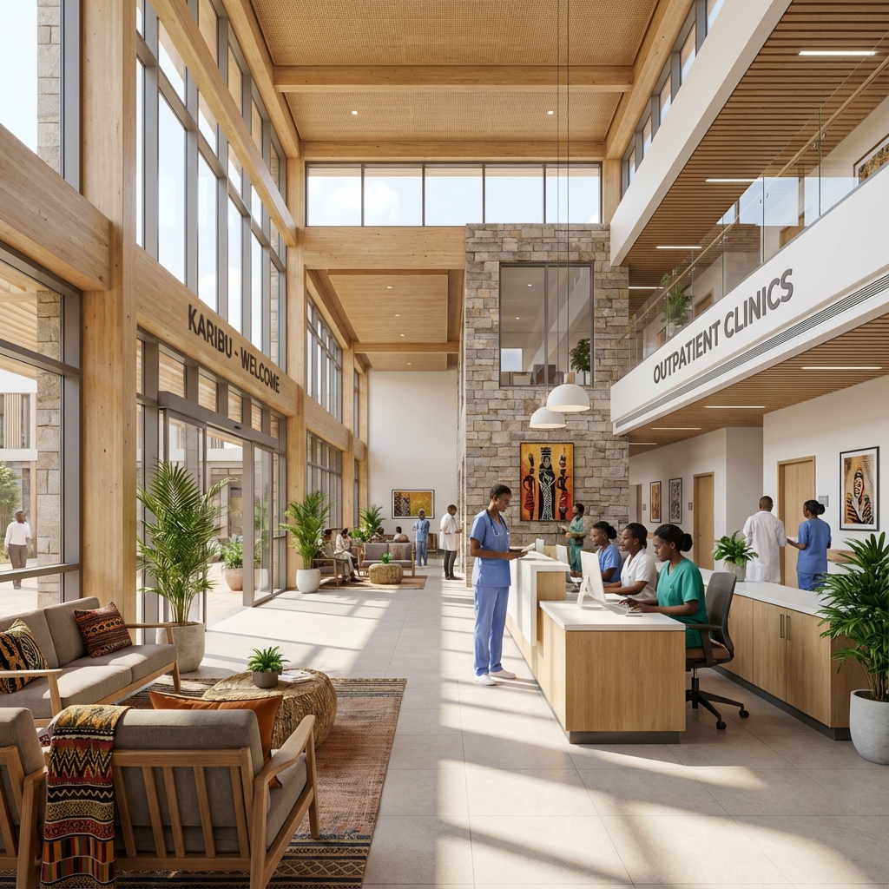

Our Impact
Tangible results for mothers and children in need.
COMPLETED
- SEPT 2025
Nembe Hospital Outreach
Our team successfully connected with the healthcare staff at Nembe Cottage and the Main Hospital to assess needs and provide immediate support.
- Meeting with nursing staff
- Donation of mosquito nets to both facilities
- Community engagement

Clinical Services
BP Monitoring
Community blood pressure monitoring to prevent and manage hypertension.
Newborn Care
Essential care services and education for the health of newborns.
Clinic Access
Prenatal and postnatal clinic support for expectant and new mothers.
Our Gallery
Capturing the moments that matter.



UPCOMING
- MARCH 2026
Women’s & Newborn Initiative
A comprehensive program designed to upskill healthcare providers and improve patient outcomes in critical areas.
Focus Areas:
- Postpartum Hemorrhage
- Preeclampsia
- Maternal Hypertension
- Essential Newborn Care